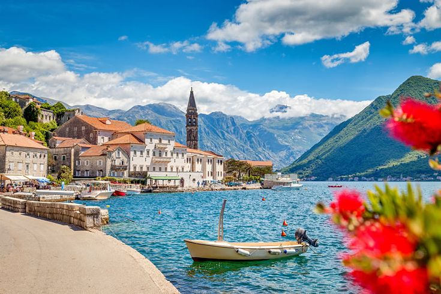
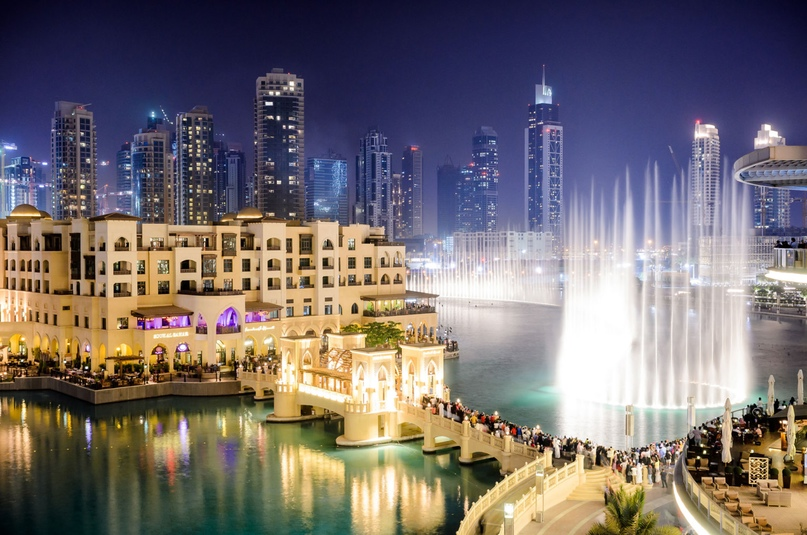
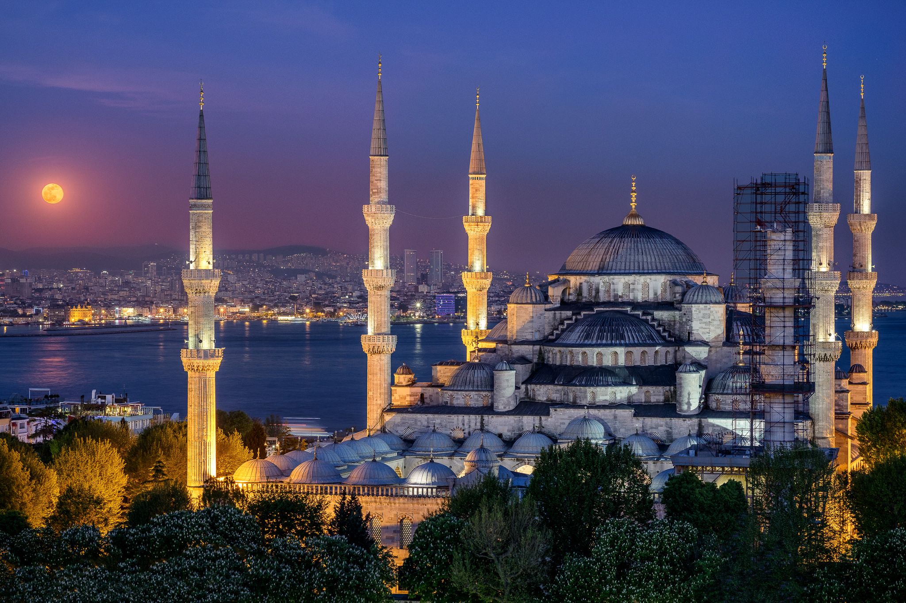

Привет, меня зовут Яна
Моя история
Мой путь в программировании начался в конце 2022 года, когда я начала учиться на Python-разработчика. В июне этого года прошла интенсив Школа 21 от Сбера и стала её участником. Я поняла, что программирование — это то, чем я хотела бы заниматься.
Путешествия
Это неотъемлемая часть меня. Никогда не могла усидеть на одном месте в свободное время. Каждый новый город, каждая новая страна - это новая история, новые знакомства, новые впечатления, которые остаются в памяти. Путешествия помогают взглянуть на мир по-новому, забыть о рутине и стрессе и наслаждать моментом.


